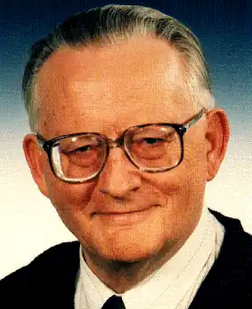

Народився: 23 марта 1928 р
Помер: 12, лютого 2005 р
Карл-Хайнц Тушель народився 23 березня 1928 року в Магдебурзі. Після закінчення школи і навчання в області математики працював спочатку в хімічній і гірничодобувної промисловості, потім був редактором газети "Freiheit" і працював в Союзі вільної німецької молоді (FDJ). В цей час були опубліковані його перші сатиричні вірші. З 1958 по 1961 рр. навчався в Літературному інституті ім. Іоханес Бехера в Лейпцигу, під час навчання в якому став працювати драматургом і поетом-піснярем в музичному театрі "Die Kneifzange" (Кліщі) при ансамблі ім. Еріха Вайнерт Національної народної армії НДР. Робота в музичному театрі тривала аж до 1976 року, коли Тушель стає професійним письменником. Карл-Хайнц Тушель відомий перш за все як фантаст. Першу свою НФ-повість "Das doppelte Rätsel" він опублікував ще в 1966 р Після цього майже щороку виходили в світ його НФ романи, повісті та збірки оповідань, так що Тушель по праву вважається одним з найбільш плідних фантастів НДР. Нічого нового в жанрі письменнику винайти не вдалося, але його твори, в яких перепліталися фантастика, детектив і пригоди, були досить популярні. Кілька нових книг Тушеля було опубліковано також після возз'єднання Німеччини. Помер письменник у віці 76 років в Берліні. Остання збірка його оповідань "Sternbedeckung" був опублікований посмертно. У письменника залишилося два незакінчених роману.